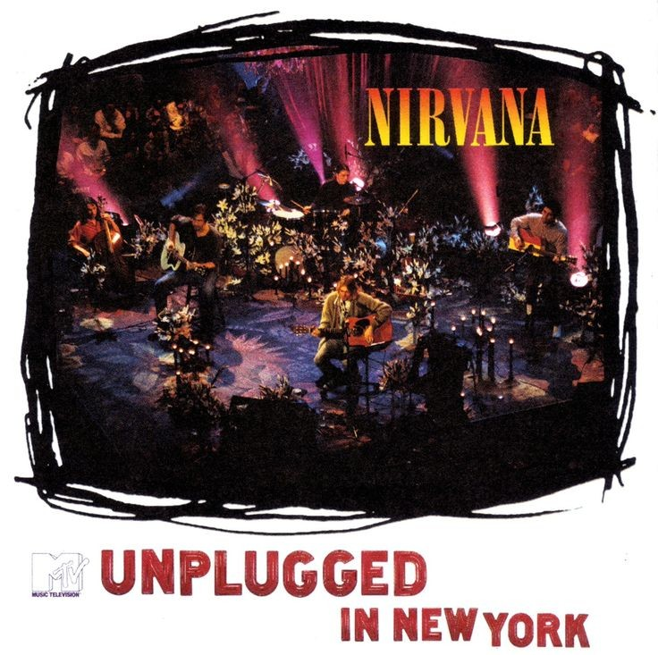

MTV Unplugged in New York

| # | Title | Duration |
|---|---|---|
| 1 | About a Girl | 3:37 |
| 2 | Come as You Are | 4:13 |
| 3 | Jesus Doesn't Want Me for a Sunbeam | 4:37 |
| 4 | The Man Who Sold the World | 4:20 |
| 5 | Pennyroyal Tea | 3:40 |
| 6 | Dumb | 2:52 |
| 7 | Polly | 3:16 |
| 8 | On a Plain | 3:44 |
| 9 | Something in the Way | 4:01 |
| 10 | Plateau | 3:38 |
| 11 | Oh, Me | 3:26 |
| 12 | Lake of Fire | 2:55 |
| 13 | All Apologies | 4:23 |
| 14 | Where Did You Sleep Last Night | 5:08 |
Nirvana's MTV Unplugged in New York is one of the most iconic live performances in rock history. Recorded on November 18, 1993, at Sony Music Studios in New York, the set was part of the MTV Unplugged series, where artists performed acoustic versions of their songs. Unlike other bands that played their greatest hits, Nirvana took a different approach, performing lesser-known tracks and several covers, including David Bowie's The Man Who Sold the World and Lead Belly's Where Did You Sleep Last Night.
The performance had a haunting, intimate atmosphere, enhanced by dim lighting and funeral-like flowers. It was one of Kurt Cobain’s final major performances before his death in April 1994. The album version, MTV Unplugged in New York, was released on November 1, 1994, and won Best Alternative Music Album at the Grammys. It remains one of Nirvana’s most beloved records, showcasing Cobain’s raw vocals and the band’s ability to translate their grunge sound into a deeply emotional acoustic set.